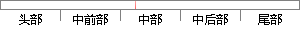

除了以上基本功能之外，还预期实现以下几种功能：
片段位置图

相似结果|
相似片段 1：课题的目的是建立一个实验教学平台，因此在人机交互功能上不考虑 G代码的自动生成的模块的实现。除了以上所介绍的几种基本功能，数控机床一般还具有插补功能、刀具功能、借助于各种诊断程序的自诊断功能等，这些
相似片段 2：$的可选功能(可选特征)在某些行业的企业中，除了基本功能之外，还存在一些其它的功能。这些功能可以看作MES系统的可选特征。例如在冶金行业中，除了实现MES系统的基本功能外，通常还需要增加以下特征
|
※ 片段修改建议 ※
近似词参考：- 除了：除
- 之外：以外
- 以下：如下 下列
- 功能：功效
系统自动生成语句：除以上基本功效以外，还预期实现如下几种功效：
注：本片段修改建议为系统自动生成，仅供参考。